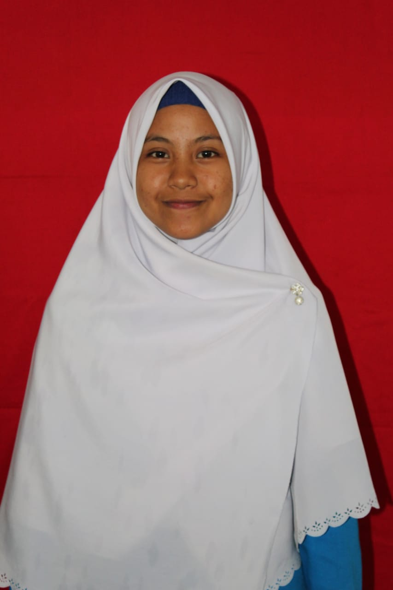

CURRICULUM VITAE

DATA PRIBADI
| Nama | : Bunga febria dona |
| Tempat, Tanggal Lahir | : Embong ijuk, 14 februari 2001 |
| Agama | : Islam |
| Warga Negara | : Indonesia |
| Alamat | : Embong Ijuk dusun 3 NO 077 kec. Bermani ilir Kab. Kepahiang Provinsi Bengkulu |
| E-mail | : Bungafebriadona@gmail.com |
PROFIL
Nama saya Bunga febria dona, Asal saya dari Provinsi Bengkulu, saya anak ke 4 dari lima saudara,Saya kuliah di Sekolah Tinggi Teknologi Nurul fikri
RIWAYAT PENDIDIKAN
| Nama Sekolah |
Tahun Lulus |
| SD 02 Bermani Ilir |
2008 - 2013 |
SMPN 01 Bermani ilir |
2014 - 2016 |
| MAN 2 Kepahiang |
2016 - 2019 |